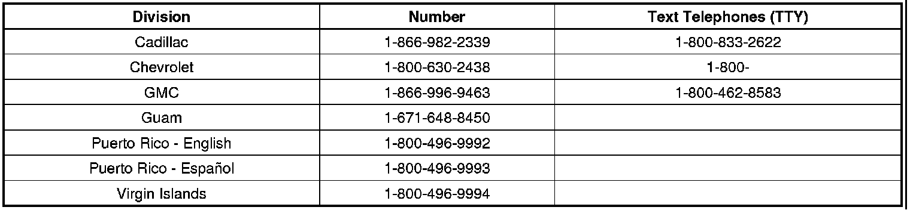

Owner Letter
Owner LetterJuly 2010
Dear GM Customer:
As the owner of a 2007 model year Cadillac Escalade, Escalade ESV, Escalade EXT; Chevrolet Avalanche, Silverado, Suburban, Tahoe; GMC Sierra, Yukon, or Yukon XL vehicle, your satisfaction with our product is very important to us.
This letter is intended to make you aware that some 2007 model year Cadillac Escalade, Escalade ESV, Escalade EXT; Chevrolet Avalanche, Silverado, Suburban, Tahoe; GMC Sierra, Yukon, and Yukon XL vehicles may have a peeling condition on the top surface of the front or rear chrome interior door handle(s) that could create a rough edge. A chrome plating irregularity combined with direct sunlight exposure may cause the plating to separate from the top surface of the handle.
Do not take your vehicle to your GM dealer as a result of this letter unless you believe that your vehicle has the condition as described above.
What We Have Done: General Motors is providing owners of 2007 model year Cadillac Escalade, Escalade ESV, Escalade EXT; Chevrolet Avalanche, Silverado, Suburban, Tahoe; GMC Sierra, Yukon, and Yukon XL vehicles with additional protection for the front and rear chrome interior door handles. If this condition occurs on your 2007 model year Cadillac Escalade, Escalade ESV, Escalade EXT; Chevrolet Avalanche, Silverado, Suburban, Tahoe; GMC Sierra, Yukon, or Yukon XL within 10 years of the date your vehicle was originally placed in service or 100,000 miles (160,000 km), whichever occurs first, the condition will be repaired for you at no charge. Diagnosis or repair for conditions other than the condition described above is not covered under this special coverage program.
What You Should Do: Repairs and adjustments qualifying under this special coverage must be performed by a General Motors dealer. You may want to contact your GM dealer to find out how long they will need to have your vehicle so that you may schedule the appointment at a time that is convenient for you. This will also allow your dealer to order parts if they are not already in stock. Keep this letter with your other important glove box literature for future reference.
Reimbursement: The form explains what reimbursement is available and how to request reimbursement if you have paid for repairs for the special coverage condition. Your request for reimbursement, including the information and documents mentioned on the enclosed form, must be received by GM by July 31, 2012.
If you have any questions or need any assistance to better understand related repairs, please contact your dealer. If you have questions related to a potential reimbursement, please contact the appropriate Customer Assistance Center at the number listed below.

We are sorry for any inconvenience you may experience; however we have taken this action in the interest of your continued satisfaction with our products.
Customer and Relationship Services
Enclosure
09239